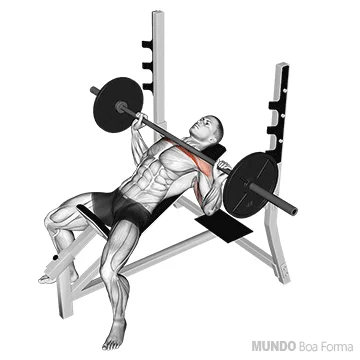

Modo de fazer
Para fazer um supino inclinado, ajuste o banco entre 30 a 45 graus, deite-se com as omoplatas no banco e os pés no chão. Segure a barra um pouco mais larga que os ombros, abaixe-a até o peito mantendo os cotovelos ligeiramente flexionados, e então empurre-a para cima estendendo os cotovelos. Repita com a técnica correta e descanse entre as séries.

Observações
- Segure bem no ferro
- Empurre com força
Modo de fazer
Para fazer o exercício de crucifixo na máquina, primeiro ajuste o banco e a resistência conforme necessário. Sente-se com as costas retas e os pés firmes no chão, segurando as alças da máquina. Inspire e abra os braços para os lados até a altura dos ombros, mantendo os cotovelos flexionados. Expire enquanto contrai os músculos do peito e volta os braços à posição inicial.

Observações
- Não seja ladrão
- Pense que esta abraçando a morena